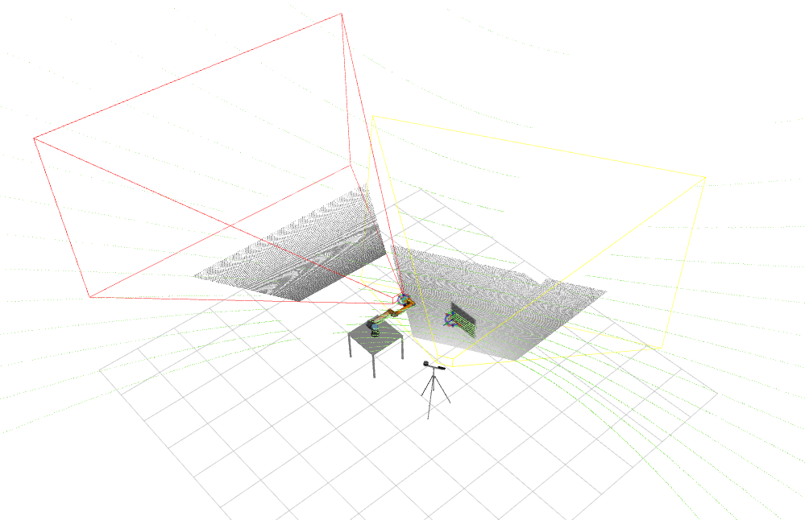
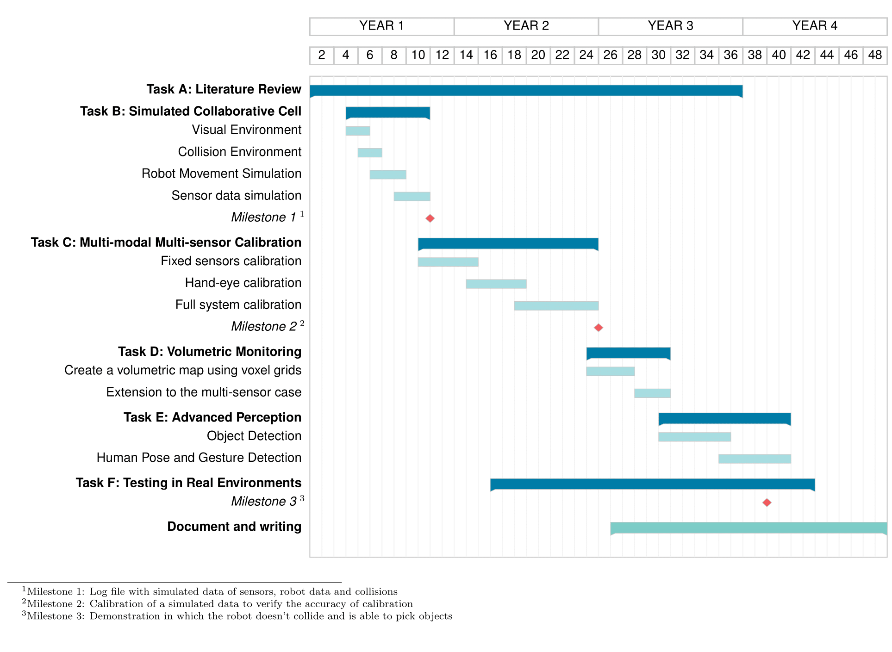

Abstract
The ultimate goal of a collaborative manufacturing cell envisions a space where humans and robots work on a standard task with efficiency and complete safety. Nowadays, most collaborative cells required human operators to perform unnatural gestures to communicate with the robot. Additionally, these systems display limited interaction between humans and robots: often, the reaction to unexpected motions from the human operator is solved by halting the robot's movement. This plan proposes to tackle these limitations by developing advanced perceptual mechanisms based on multiple sensors of multiple modalities. Multi-modal because different modalities bring different types of information that give rich information about inside the cell. Multi-sensor to ensure that the cell is fully covered, even when there are unforeseen occlusions. Using advanced and robust perception will guarantee a language between the human and the robot, where the automatic system supports the communication burden, creating an efficient operation.Keywords
sensors, calibration, collaborative cell, multi-modal, multi-sensor, perception, robotics, cobotsSustainable Development Objectives
Goal 9. Build resilient infrastructure, promote inclusive and sustainable industrialization and foster innovationState of the art
1. Human-Robot Collaboration, Collision Detection and Safety Requirements
The recent aim to increase productivity and flexibility in industrial environments has created a growing interest in the human-robot collaboration [1]. As a result, solutions for collaborative robots and collaborative cells are increasing on the market. Some examples of collaborative cells setups are [2; 3; 4]. According to [5] there are two main concerns in a shared workspace between robots and humans: the protection of the human body and the protection of the mechanical structure. These two concerns are directly related to collision avoidance. In [5] , two types of physical interaction are defined: normal condition, where the interaction is desired, and fault condition, which is an unexpected collision that can cause injuries. The action of the robot when a fault condition occurs is implemented differently by different authors: in [3], the robot automatically enters an emergency stop if the operator's hand is detected in the workspace. In [4], this is ensured by a speed reduction algorithm based on real-time human-robot distance estimation, which operates in highly dynamic conditions. These types of collaborations are very limited - ideally, the robot should continue to operate safely and in normal condition even when the human occupies part of the workspace. Our approach aims to develop much more advanced collaborative functionalities that will monitor the entire workspace volume and allow robots and human operators' to coexist without triggering unnecessary fault condition.
This type of advanced perception is only achieved with a multi-sensor (to cover the entire volume) and multi-modal system (more modalities bring more robustness and redundancy). In [6], the perception is also achieved with a multi-modal and multi-sensor setup, using a gesture control sensor, motion sensor, depth camera and RGB camera. In [7], the evaluates the separation in a 3D space based on an explicit human model and uses forward physical simulation of the robot using only depth cameras to perform experiments with a 5 DOF articulated robot and a human safely collaborating to perform an assembly task.
Safety requirements in collaborative setups are also standardized [8] with strict restrictions when it comes to the robot motion during human collaboration. These restrictions are mainly related to speed or torque limitations when the robot is operating around humans. The standard specifies that the velocity of the robot should be related to the distance between the human the robot, according to equation 1.
distance = velocity x braking time (equation 1)
Some developed methodologies allow untrained users to interact and communicate with robots via touch 9]. This type of interaction requires that the robotic arm is equipped with appropriate sensors that can sense the touch, including its location and strength. In [10], the robot estimates the human direction, selects and proactively executes an appropriate task without requiring an explicit user command. In [11], a probability-based approach was developed to help the robot to adapt to human behaviour and act proactively in ambiguous intentions scenarios. The robot can either wait for disambiguation of the intention, requiring extra-human action or proactively act depending on his previous knowledge about the human behaviour. The adaptive proactivity is achieved with the help of transition weights for transitions between the neighbouring states in a finite state machine. All these scenarios require the estimation of the human's intentions as early as possible so that the robot adapts to different situations reactively.
This genuine and reactive collaboration with the fulfilment of safety requirements can only be obtained by an advanced, real-time perception of the human and its movements. This is accomplished by using range sensors for volumetric monitoring and RGB data for object detection. Some authors already proposed sensor-based safety systems in collaborative environments [6; 7; 12; 13]. In addition, many approaches estimate the distance between human and robot using depth or motion sensors and use it as a safety requirement parameter [4; 14; 15; 16].
In the proposed methodology, collision detection is taken a step further - the creation of a high resolution real-time volumetric map can be used to measure the distance between the robot, the humans inside the cell and other objects within the workspace. With this detailed information, it will be possible to calculate trajectories for the motion of the robotic arm within the free space without the necessity of stopping. This is only possible with a significant amount of range sensors installed in the cell, covering the entire volume and avoiding most dynamic occlusions. Also, there is the possibility of doing an active search using the hand-eye camera to explore the occluded volumes, where the robot actively searches for poses that allow the discovery of unseen volumes. This follows the example presented in [17], where the regions in the scene are classified as occupied, free, or unknown. This method can create and update a representation of the scene with the knowledge of the regions that are yet unexplored. The algorithm calculates the Next Best View through a discrete approach that samples and evaluates a set of view hypotheses to select the view that can discover more unknown volumes. This process occurs until there are no more unknown regions.
Advanced collaborative functionalities will also include object detection, human pose estimation, and movement anticipation, which will be included in this project to create a more natural human-robot collaboration.
2. Multi-Modal Multi-Sensor Fusion and Calibration
To adequately monitor a complex environment around them, such as a collaborative cell, robotic systems need to process multi-modal information. According to [18], the challenges of multi-modality can be divided into five ma-jor categories: representation, translation, alignment, fusion, and co-learning.Representation refers to how multi-modal data is structured, exploring the data’s complementary and redundancy. Translation refers to mapping data from one modality to another. Alignment is the identification of direct relations between elements/sub-elements from different modalities. Fusion is the grouping of several modalities to perform predictions. Furthermore, co-learning treats the transference of knowledge between modalities.
The challenges in multi-modal fusion are also explored in [19], by raising some critical questions: What level of fusion to use? How to fuse? When to fuse? What to fuse? Three fusion levels are explored to answer those questions: early fusion, which extracts features from different modalities, combines them and sends them to a single unit analysis. This type of fusion uses the correlation between features of different modalities at an early stage, helping in better task accomplishment. However, time synchronization between the different modalities is a challenge. In late fusion, the analysis units first provide a local decision from each feature, which is later combined using a decision unit fusion, outputting a decision at the semantic level. The advantages of this type of fusion are that decisions present the exact representation; it offers scalability and allows using more appropriate methods for each modality. Nonetheless, this method fails to use the feature level correlation among modalities and is more time-consuming. Finally, hybrid fusion combines early and late fusions in an attempt to take advantage of both methods.
In general, whenever an intelligent or robotic system comprises two or more sensors, a procedure that estimates the geometric transformations between those sensors is required. The process by which these transformations are estimated is called extrinsic calibration. The vast majority of sensor fusion techniques operate under the assumption that accurate geometrical transformations between the sensors that collect the data are known. This is valid for many different applications, since more simple cases, such as the simple design of sensors that collect RGB and depth information [20] and a stereo camera pair designed to carry out underwater 3D reconstruction [21], to more complex sensor setups such as intelligent vehicles [22; 23], smart camera networks [24], or even multi-sensor image analysis from datasets captured by diverse airborne or space borne sensors [25]. Thus, one may argue that an accurate estimation of those transformations, i.e., a good extrinsic calibration, is a critical component of any data fusion methodology.Although extrinsic calibration is already a well-defined problem, there are several variants of that problem: fixed-fixed sensor, fixed-mobile sensor and hand-eye calibration. Fixed sensors are the most common case study in the literature [26; 27]. Some authors also explore the hand-eye case [28; 29; 30; 31].There is, although, a gap in the literature in the combination of both systems.In terms of a multi-sensor and multi-modal calibration, most techniques only use two sensors from two modalities as in [27; 32] and a few others more than two [33; 34]. It is unusual to see techniques applied to a significant number of sensors, which is the case of a collaborative cell.
3. Advanced Perception and Recognition of Objects, Human Poses and Action Anticipation
As concluded before, an advanced and accurate perception is the key to an effective, and most importantly, safe, collaborative cell. This advanced perception can be divided into several subcategories:
- Detection of objects that are necessary to complete the task allocated to the robot at that time;
- Human detection and pose recognition to prevent collisions with the human body or parts of the human body that are in the robot's reach (for example, the arms);
- Action recognition and estimation to facilitate the human-robot communication and to point towards a natural collaboration.
In addition to these already complex challenges, this perception has to be done in real-time and with a high confidence level which is not straightforward when using techniques that require high computational effort, such as deep learning.
Object detection and 6DOF pose estimation are some of the most fundamental and challenging perception problems. It consists of locating an object in an image from a large number of predefined categories. Deep learning techniques have become one of the most powerful solutions for object detection and have revolutionized the ability to learn directly from data [35]. Fig. 1 [35]. shows a summary of the challenges of object detection, in particular, focusing on the balance between accuracy and efficiency. In a collaborative cell, the volume needs to be constantly monitored in real-time using different sensors. This requires a high-efficiency scenario is mandatory to a successful perception, not only because of the computational efficiency required to detect objects in real-time but also due to the high volume of information being processed simultaneously coming from several sensors. This scenario also brings another challenge: scalability. A detector should be able to handle previously unseen objects, unknown situations, and high data rates [35].
 Fig. 1. Taxonomy of challenges in object detection [35].
Fig. 1. Taxonomy of challenges in object detection [35].
Handling previously unseen objects is one of the most challenging parts of object detection. Even when using deep learning methods, the method is only trained to detect a predefined number of object categories. However, there are many objects present in the environment, and eventually, the detector will face unknown situations. The detector must handle this type of situations to achieve an efficient collaboration. In [36], there are several categories previously learned by the detector. When the detection accuracy of these categories reaches a determined threshold, a new object category is given, and the process repeats until the accuracy reaches the threshold again. This method has the disadvantage of always requiring the human input of new categories. Although it learns to detect new objects, these objects should always be described and inserted manually.
Currently, one of the most researched methods to handle unknown categories is unsupervised learning. Unsupervised learning is a technique where users do not need to supervise the model. Instead, it works on discovering patterns and information that was previously undetected. It mainly deals with the unlabelled data, allowing the detector to classify data according to its features, without necessarily knowing what each class is called, but identifying that they are different objects, each one with its differentiating features. An example of this is [37], where a non-parametric classification problem is formulated at the instance level. It uses noise-contrastive estimation to tackle the computational challenges imposed by a large number of instance classes.
Besides object detection, recognition and 6DOF pose estimation, which allows grasping objects to fulfil the assigned task for the robot, the humans inside the collaborative cell also need to be tracked and monitored to allow collaboration with the robot. As discussed before, volumetric monitoring supports collision avoidance, which leaves the human pose and action recognition as a critical factor for a natural and efficient human-robot collaboration.
Human action recognition is the recognition and understanding of human actions. Single modality human action recognition is already widely studied [38; 39; 38; 40]. However, the multi-modal fusion gives robustness to human action recognition and addresses some of the limitations of single modalities [41; 42].
Objectives
A collaborative cell is a space where humans and cobots coexist and collaborate in everyday tasks. Collaborative cells are generally used in industrial environments, where the robot helps an industrial operator perform precision tasks or grab objects for the human. For robots to collaborate with humans, the cell needs to be equipped with multiple sensors with multiple modalities that give complementary information about the surroundings. The different sensor modalities provide different types of information: LiDARs provide three-dimensional information about objects and distances to objects precisely; RGBD cameras provide not only the usual camera information with two-dimensional colour information but also the depth component that also helps to map the three-dimensional space. These three components: laser, colour, and depth, complement each other to output the required information to meet the safety requirements for a machine to cooperate with humans.
This project's main objective is to "give eyes" to the robot through these sensors and generate a real-time representation by fusing the information of all these sensors. The robot operator can then use this representation to create an automatic movement planner according to the tasks to complete. To fulfill a robust perception, two main sub-goals need to be fulfilled: calibration of the sensors and perception of the environment inside the cell by fusing and analysing the sensors' information.
The two main sub-goals are divided into the following specific goals:
- Development of an automatic calibration solution for a multi-modal and multi-sensor setup.
- Perception inside the collaborative cell
- Volumetric monitoring of a predefined 3D space in real-time
- Creation in real-time of a three-dimensional representation of the operator's poses and postures
- Object recognition and pose estimation using multi-modal data
Methodology
The idea behind this project is to have a cobot equipped with an RGBD camera (hand-eye system) inside a cell that has several fixed RGBD and LiDARS. The depth component of the RGBD cameras and the LiDAR information is essential to the cell's volumetric monitoring. In contrast, the RGB component of the RGBD cameras is essential to the semantic perception of objects. With this in mind, this plan has been divided into the following tasks:
A. Literature Review
As a highly researched and innovative subject, it requires a previous in-depth literature review. This is important to understand the context and what has already been developed, providing a complete comprehension of the main questions/problems associated with the multi-modality and collaborative robots. The focus is on identifying the significant shortcomings in the existing research and what has or has not been done to address these gaps.
B. Simulated Collaborative Cell
The first task is to create the cell and its contents in a ROS simulation environment, which involves describing the robot with information about its physical and visual properties and the objects' coordinated system, as shown in Fig.2. This enables collision detection since it is possible to monitor the robot's movement and other objects inside the cell in real-time. Fig. 2. Xacro of collaborative cell for integration with ROS.
Each component should be created in a 3D CAD design software to create the simulation. The collision
component does not necessarily need to be the same as the visual component. For example, in the cell
beams, it is recommended that the collision is defined as a simple parallelepiped to decrease
computational effort. The simpler the collision models are, the faster the simulation will be.
This also implies defining a coordinate system for each component. Finally, the coordinate systems
should be connected between themselves to create a transformation tree.
Besides real-time monitoring, this simulation will also provide simulated multi-modal sensor data from
both cameras and LiDARs, which can be used to test the algorithms and methodologies without compromising
the safety requirements and elaborate complex and quick tests without the need to use the physical
hardware.
Fig. 2. Xacro of collaborative cell for integration with ROS.
Each component should be created in a 3D CAD design software to create the simulation. The collision
component does not necessarily need to be the same as the visual component. For example, in the cell
beams, it is recommended that the collision is defined as a simple parallelepiped to decrease
computational effort. The simpler the collision models are, the faster the simulation will be.
This also implies defining a coordinate system for each component. Finally, the coordinate systems
should be connected between themselves to create a transformation tree.
Besides real-time monitoring, this simulation will also provide simulated multi-modal sensor data from
both cameras and LiDARs, which can be used to test the algorithms and methodologies without compromising
the safety requirements and elaborate complex and quick tests without the need to use the physical
hardware.
C. Automatic Extrinsic Calibration of a Multi-modal and Multi-sensor Setup
Extrinsic calibration is the process of determining the sensor's pose w.r.t. to another sensor or the world. When using a complex system of sensors, especially one that requires high precision, the calibration must be robust and reliable. This project will focus on optimization techniques to address the extrinsic calibration of multi-modal and multi-sensor systems. This implies creating distinguished objective functions for each modality. Furthermore, the optimization must be able to process different modalities and combine those functions to estimate the transformation between all sensors. This will extend the functionalities of the ATOM calibration framework [43; 44]. As mentioned before, this work will have to deal with fixed and mobile sensors (hand-eye). Therefore, the calibration method should handle the following cases: fixed-fixed, fixed-mobile and hand-eye calibration. There is no solution in the literature able to calibrate this kind of systems. Additionally, various sensors are to be installed within the cell (approximately 10), which adds difficulty to the process because most methods calibrate only a small number of sensors. This solution will be general and possible to apply to any sensor system and not only to a collaborative cell environment. This calibration package will also include a visualization feature that draws the frustum of each sensor according to its internal parameters,} as is demonstrated in Fig.3. The frustum's visualization acts as a tool to determine the optimal placement of the cell sensors that cover the maximum volume possible.  Fig. 3. Xacro of collaborative cell for integration with ROS. Additionally, this task also includes the creation or adaptation of the sensors' drivers in ROS to launch multiple sensors at the same time with the correct configurations.D. Volumetric Monitoring
After the calibration procedure, and with accurate estimates for the sensors' transformations, the information is combined to generate a 3D map of free and occupied space in the cell. This map allows monitoring the free and occupied space in the cell, making collision detection possible. The idea is to divide the 3-dimensional space into much smaller volumes (voxels) and detect whether those voxels are occupied or not. Although there are some solutions in the literature [45], some challenges remain, in particular, the large number of sensors in the cell. The 3-dimensional components of the sensors required for volumetric monitoring are the depth information from the RGBD cameras and the LiDAR output. In a cell with a functional volume where the robot and the operator act together, it cannot be expected that a single point of view is sufficient to monitor the entire cell. In addition to adding sensors to cover the entire cell volume, it is also necessary to consider occlusions (static and dynamic). The occluded volume of the cell is impossible to predict since moving objects cause moving occlusions. The hand-eye camera could also be used to explore these occluded sub-regions of the cell volume.E. Advanced Perception
Cobots are expected to perform complex and advanced tasks in collaboration with human operators; consequently, a common language between robots and humans must be established. In most state-of-the-art methods, communication with the robot implies unnatural human gestures, such as tapping the robot. The objective here is that the robot naturally and efficiently understands the human - for example, with voice commands that request picking an object or gestures that would typically be used to communicate with other humans, like reaching out with one hand, avoiding the need for humans to use unnatural conventions to command the robot. Thereafter, this project's final task is to develop a perception solution to detect and understand where and what objects or humans are. The advanced perception should cover the detection of objects in the cell, humans and estimation of their postures and gestures. This should also include action anticipation algorithms to maintain the natural flow of the robot in the free volumes of the cell and to allow smooth movements around obstacles and humans. The focus here will not be on developing novel deep learning network architectures but rather on how existing state-of-the-art methodologies could be adapted to take advantage of the fusion of multiple sensors and modalities in the cell. Thus, this task will have three main focuses: object recognition and 6DOF pose estimation, human pose detection and action recognition. These three objectives will all be achieved with deep learning and unsupervised learning for objects to create a system able to learn new unseen objects and adapt to unknown scenarios without compromising the safety requirements.F. Testing in Real Environments
The project will carry out tests in a collaborative cell containing multiple sensors. This cell collaborative of the Augmanity project serves as a base and support for this project's development. Tests will be conducted periodically throughout the project to assure the accuracy of every phase of the project. This task also includes creating evaluation metrics for each one of the methods of calibration, volumetric monitoring and advanced perception phases. The indicators are already defined to evaluate the calibration method; this phase will be evaluated using the rotation and translation error, x and y error, and the root mean squared error. These errors also allow comparing the results with other prominent calibration techniques.Expected Outcome
The project will extend the ATOM framework that has already achieved publications in top journals in robotics [43; 44]. Furthermore, the author has already published several related works in journals and therefore believes that this project will result in the publication of multiple articles in top scientific journals, namely in the areas of sensor fusion, robotics and computer vision. In practical terms, the final product of this work should be a fully monitored cell, where the free and occupied space in the cell is updated in real-time, preventing collisions, but beyond that, a cell where it is constantly known exactly what and where is in the cell. The cell should also have a natural communication with humans to facilitate the collaboration and make it as efficient as possible. For this, humans should be constantly monitored, not only in terms of where they are (for security reasons) but also in terms of human action.Contingency Plan
There are phases of the plan that may encounter unforeseen circumstances; for example, the sensors are placed in a position that does not cover the necessary space for volumetric monitoring. This can be fixed with an analysis of the sensor's position, or potentially, by using an optimization algorithm that measures, in a simulated environment, the volume covered by the sensors in a position and optimizes the sensor's position to maximize the covered cell space. Due to the current pandemic, there may also continue to exist limitations to laboratory work. In this situation, the plan would be to double down on developing a simulated collaborative cell, which would support all the subsequent developments in the plan of action.Timeline
References
[1] P. Tsarouchi, S. Makris, and G. Chryssolouris, “Human–robot interaction review and challenges on task planning and programming,” International Journal of Computer Integrated Manufacturing, vol. 29, no. 8, pp. 916– 931, 2016.
[2] A. M. Djuric, R. Urbanic, and J. Rickli, “A framework for collaborative robot (cobot) integration in advanced manufacturing systems,” SAE Int. J. Mater. Manf., vol. 9, pp. 457–464, 04 2016.
[3] A. Cherubini, R. Passama, A. Meline, A. Crosnier, and P. Fraisse, “Mul- timodal control for human-robot cooperation,” in 2013 IEEE/RSJ Inter- national Conference on Intelligent Robots and Systems, pp. 2202–2207, 2013.
[4] E. Magrini, F. Ferraguti, A. J. Ronga, F. Pini, A. De Luca, and F. Leali, “Human-robot coexistence and interaction in open industrial cells,” Robotics and Computer-Integrated Manufacturing, vol. 61, p. 101846, 2020.
[5] S. Haddadin, A. Albu-Schaeffer, A. De Luca, and G. Hirzinger, Collision Detection and Reaction: A Contribution to Safe Physical Human-Robot Interaction. 2008. Pages: 3356-+ Publication Title: 2008 Ieee/Rsj Inter- national Conference on Robots and Intelligent Systems, Vols 1-3, Confer- ence Proceedings WOS:000259998202091.
[6] H. Liu and L. Wang, “Collision-free human-robot collaboration based on context awareness,” Robotics and Computer-Integrated Manufacturing, vol. 67, p. 101997, 2021.
[7] C. Morato, K. N. Kaipa, B. Zhao, and S. K. Gupta, “Toward Safe Human Robot Collaboration by Using Multiple Kinects Based Real-Time Human Tracking,” Journal of Computing and Information Science in Engineer- ing, vol. 14, 01 2014. 011006.
[8] . ISO 10218—Robots for Industrial Environments—Safety Require- ments—Part 1: Robot, ISO ISO/TC 299
[9] G. Grunwald, G. Schreiber, A. Albu-Schaffer, and G. Hirzinger, “Touch: The direct type of human interaction with a redundant service robot,” in Proceedings 10th IEEE International Workshop on Robot and Human In- teractive Communication. ROMAN 2001 (Cat. No.01TH8591), pp. 347– 352, 2001.
[10] A. J. Schmid, O. Weede, and H. Worn, “Proactive robot task selection given a human intention estimate,” in RO-MAN 2007 - The 16th IEEE International Symposium on Robot and Human Interactive Communication, pp. 726–731, 2007.
[11] M. Awais and D. Henrich, “Proactive premature intention estimation for intuitive human-robot collaboration,” in 2012 IEEE/RSJ International Conference on Intelligent Robots and Systems, pp. 4098–4103, 2012.
[12] L. Wang, M. Givehchi, G. Adamson, and M. Holm, “A sensor-driven 3d model-based approach to remote real-time monitoring,” CIRP Annals, vol. 60, no. 1, pp. 493–496, 2011.
[13] A. M. Zanchettin, N. M. Ceriani, P. Rocco, H. Ding, and B. Matthias, “Safety in human-robot collaborative manufacturing environments: Metrics and control,” IEEE Transactions on Automation Science and Engineering, vol. 13, no. 2, pp. 882–893, 2016.
[14] A. Mohammed, B. Schmidt, and L. Wang, “Active collision avoidance for human-robot collaboration driven by vision sensors,” International Journal of Computer Integrated Manufacturing, vol. 30, no. 9, pp. 970– 980, 2017. WOS:000402991300006.
[15] F. Flacco, T. Kroeger, A. De Luca, and O. Khatib, “A Depth Space Approach to Human-Robot Collision Avoidance,” in 2012 Ieee International Conference on Robotics and Automation (icra), pp. 338–345, 2012. ISSN: 1050-4729 WOS:000309406700051.
[16] P. A. Lasota, G. F. Rossano, and J. A. Shah, “Toward safe closeproximity human-robot interaction with standard industrial robots,” in 2014 IEEE International Conference on Automation Science and Engineering (CASE), pp. 339–344, 2014.
[17] J. Santos, M. Oliveira, R. Arrais, and G. Veiga, “Autonomous scene exploration for robotics: A conditional random view-sampling and evaluation using a voxel-sorting mechanism for efficient ray casting,” Sensors, vol. 20, no. 15, 2020.
[18] T. Baltruˇsaitis, C. Ahuja, and L.-P. Morency, “Multimodal Machine Learning: A Survey and Taxonomy,” arXiv:1705.09406 [cs], Aug. 2017. arXiv: 1705.09406.
[19] P. K. Atrey, M. A. Hossain, A. El Saddik, and M. S. Kankanhalli, “Multimodal fusion for multimedia analysis: a survey,” Multimedia Systems, vol. 16, pp. 345–379, Nov 2010.
[20] T. Hanning, A. Lasaruk, and T. Tatschke, “Calibration and low-level data fusion algorithms for a parallel 2d/3d-camera,” Information Fusion, vol. 12, no. 1, pp. 37 – 47, 2011. Special Issue on Intelligent Transportation Systems.
[21] A. M. Pinto and A. C. Matos, “Maresye: A hybrid imaging system for underwater robotic applications,” Information Fusion, vol. 55, pp. 16 – 29, 2020.
[22] M. Tsogas, N. Floudas, P. Lytrivis, A. Amditis, and A. Polychronopoulos, “Combined lane and road attributes extraction by fusing data from digital map, laser scanner and camera,” Information Fusion, vol. 12, no. 1, pp. 28 – 36, 2011. Special Issue on Intelligent Transportation Systems.
[23] M. Oliveira, V. Santos, and A. D. Sappa, “Multimodal inverse perspective mapping,” Information Fusion, vol. 24, pp. 108 – 121, 2015.
[24] W. Jiuqing, C. Xu, B. Shaocong, and L. Li, “Distributed data association in smart camera network via dual decomposition,” Information Fusion, vol. 39, pp. 120 – 138, 2018.
[25] B. Rasti and P. Ghamisi, “Remote sensing image classification using subspace sensor fusion,” Information Fusion, vol. 64, pp. 121 – 130, 2020.
[26] F. Vasconcelos, J. Barreto, and U. Nunes, “A minimal solution for the extrinsic calibration of a camera and a laser-rangefinder,” IEEE Transactions on Pattern Analysis and Machine Intelligence, vol. 34, no. 11, pp. 2097–2107, 2012.
[27] S. Rodriguez F., V. Fr´emont, and P. Bonnifait, “Extrinsic calibration between a multi-layer lidar and a camera,” pp. 214–219, 2008.
[28] M. Lindner, I. Schiller, A. Kolb, and R. Koch, “Time-of-flight sensor calibration for accurate range sensing,” Computer Vision and Image Understanding, vol. 114, no. 12, pp. 1318–1328, 2010.
[29] Y. Chen, M. Jahanshahi, P. Manjunatha, W. Gan, M. Abdelbarr, S. Masri, B. Becerik-Gerber, and J. Caffrey, “Inexpensive multimodal sensor fusion system for autonomous data acquisition of road surface conditions,” IEEE Sensors Journal, vol. 16, no. 21, pp. 7731–7743, 2016.
[30] G. Chen, G. Cui, Z. Jin, F. Wu, and X. Chen, “Accurate intrinsic and extrinsic calibration of rgb-d cameras with gp-based depth correction,” IEEE Sensors Journal, vol. 19, no. 7, pp. 2685–2694, 2019.
[31] S. Hosseinian, H. Arefi, and N. Navab, “Toward an end-to-end calibration for mobile c-arm in combination with a depth sensor for surgical augmented reality applications,” Sensors (Switzerland), vol. 20, no. 1, 2020.
[32] P. Furgale, J. Rehder, and R. Siegwart, “Unified temporal and spatial calibration for multi-sensor systems,” pp. 1280–1286, 2013.
[33] M. Pereira, D. Silva, V. Santos, and P. Dias, “Self calibration of multiple lidars and cameras on autonomous vehicles,” Robotics and Autonomous Systems, vol. 83, pp. 326–337, 2016.
[34] Z. Taylor and J. Nieto, “Motion-based calibration of multimodal sensor extrinsics and timing offset estimation,” IEEE Transactions on Robotics, vol. 32, no. 5, pp. 1215–1229, 2016.
[35] L. Liu, W. Ouyang, X. Wang, P. Fieguth, J. Chen, X. Liu, and M. Pietik¨ainen, “Deep learning for generic object detection: A survey,” International Journal of Computer Vision, vol. 128, no. 2, pp. 261–318, 2020.
[36] M. Oliveira, L. Seabra Lopes, G. H. Lim, H. Kasaei, A. Sappa, and A. Tom´e, “Concurrent learning of visual codebooks and object categories in open-ended domains,” 09 2015.
[37] Z. Wu, Y. Xiong, S. Yu, and D. Lin, “Unsupervised feature learning via non-parametric instance discrimination,” pp. 3733–3742, 2018.
[38] L. Chen, H. Wei, and J. Ferryman, “A survey of human motion analysis using depth imagery,” Pattern Recogn. Lett., vol. 34, p. 1995–2006, Nov. 2013.
[39] S. O. Slim, A. Atia, M. M. Elfattah, and M.-S. M.Mostafa, “Survey on human activity recognition based on acceleration data,” International Journal of Advanced Computer Science and Applications, vol. 10, no. 3, 2019.
[40] J. Shotton, A. Fitzgibbon, M. Cook, T. Sharp, M. Finocchio, R. Moore, A. Kipman, and A. Blake, “Real-time human pose recognition in parts from single depth images,” in CVPR 2011, pp. 1297–1304, 2011.
[41] E. Escobedo Cardenas and G. Camara Chavez, “Multimodal human action recognition based on a fusion of dynamic images using cnn descriptors,” in 2018 31st SIBGRAPI Conference on Graphics, Patterns and Images (SIBGRAPI), pp. 95–102, 2018.
[42] B. Mahasseni and S. Todorovic, “Regularizing long short term memory with 3d human-skeleton sequences for action recognition,” in 2016 IEEE Conference on Computer Vision and Pattern Recognition (CVPR),pp. 3054–3062, 2016.
[43] M. Oliveira, A. Castro, T. Madeira, E. Pedrosa, P. Dias, and V. Santos, “A ros framework for the extrinsic calibration of intelligent vehicles: A multi-sensor, multi-modal approach,” Robotics and Autonomous Systems, vol. 131, p. 103558, 2020.
[44] A. S. Pinto de Aguiar, M. A. Riem de Oliveira, E. F. Pedrosa, and F. B. Neves dos Santos, “A camera to lidar calibration approach through the optimization of atomic transformations,” Expert Systems with Applications, p. 114894, 2021.
[45] A. Hornung, K. M. Wurm, M. Bennewitz, C. Stachniss, and W. Burgard, “OctoMap: An efficient probabilistic 3D mapping framework based on octrees,” Autonomous Robots, 2013. Software available at http://octomap.github.com.